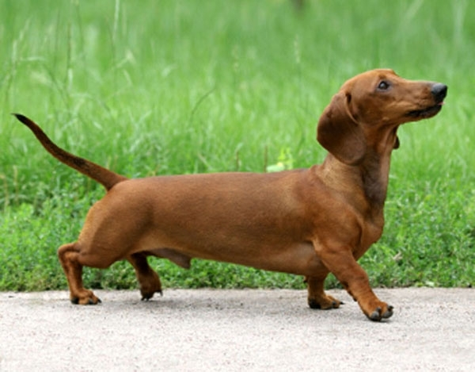

<!DOCTYPE html>
<html></html>
<a href="newpage.html" target="_blanck">ტაქსა</a>
<div style="display: flex;">
</p>

 ლეკვები</h1>
 <div>

 <p>ტაქ­სა არის მო­სიყ­ვა­რუ­ლე, ცელ­ქი კომ­პა­ნი­ო­ნი. მის­გან დგე­ბა შე­სა­ნიშ­ნა­ვი, ოჯა­ხის საყ­ვა­რე­ლი ცხო­ვე­ლი.
ამ ჯი­შის ძაღ­ლებს აქვთ სა­მი სა­ხე­ო­ბის ბეწ­ვი: მოკლე, გრძე­ლი და უხეში (ქვე­მოთ).
მაჩ­ვი­სა და კურ­დღლის და­სა­ჭე­რად გამოყვანილ ტაქ­სას აქვს უკი­დუ­რე­სად გან­ვი­თა­რე­ბუ­ლი ყნოს­ვა.
უხეშ­ბეწ­ვი­ა­ნი ტაქ­სა ნაკ­ლე­ბა­დაა გავ­რცე­ლე­ბუ­ლი და მას იყე­ნე­ბენ ხშირ ბუჩ­ქნარ­ში სა­ნა­დი­როდ. აქვს ორ­მა­გი ბეწ­ვი, წვე­რი და ხში­რი წარ­ბე­ბი.</p>
</div>

</html>